Diagnóstico de investigación pública y reunión de descubrimiento — Lima, Perú.
Aplicativo de transporte privado en Lima bajo el concepto de "taxi seguro": conductores verificados provenientes de las Fuerzas Armadas y la Policía Nacional (FFAA/PNP), con protocolo de verificación y monitoreo GPS. Opera además una línea de servicios premium (flota blindada, aéreo, marítimo, catering, casas de playa, guardia montada) y un modelo propio de reclutamiento de conductores.
Llamada entre StelUp Agency y José Ugarte Perea, fundador y gerente general de Army Driver. La información de esta sección proviene de lo declarado verbalmente por José en la llamada.
José ubica el inicio del proyecto alrededor de 2021, vinculado a su trayectoria en las Fuerzas Armadas y a la idea de ofrecer transporte confiable con personal con formación militar/policial como garantía de seguridad.
Transporte "taxi seguro" con conductores verificados ex-FFAA/PNP · producto adicional "Smart Guardian" de monitoreo · oficina mencionada en Chorrillos · interés en expansión internacional · una oportunidad no concretada vinculada a eventos de FIFA en México.
Un incidente de toma de control no autorizado de la cuenta/app · un tema regulatorio con SUCAMEC vinculado al servicio de resguardo armado · percepción propia de bajo desempeño de redes sociales en todas las plataformas.
Presupuesto disponible, alcance exacto del servicio a contratar, estado del tema SUCAMEC y quién decide la contratación final.
Métricas y contenido verificados por captura directa de cada perfil el 13-14 de noviembre de 2026.
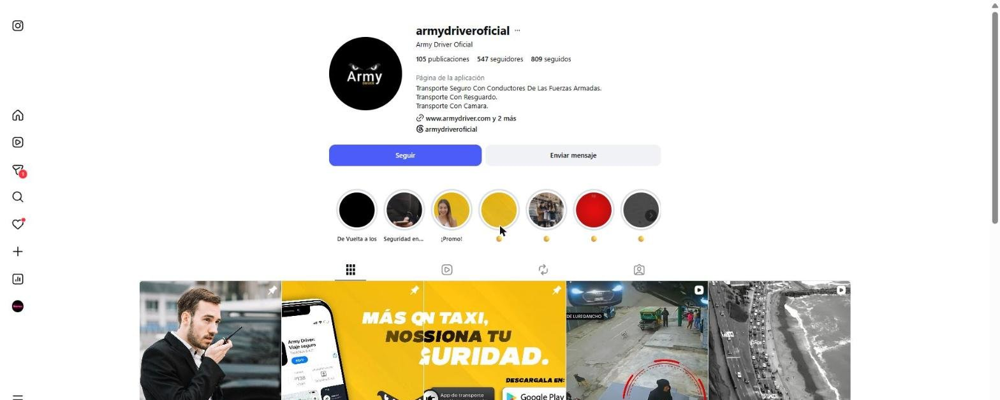
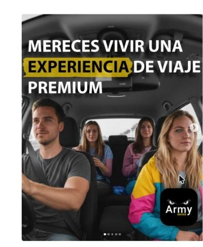
"Con army driver, tú escoges como viajar."
Sin comentarios. Imagen de banco de fotos de stock, no de flota propia.
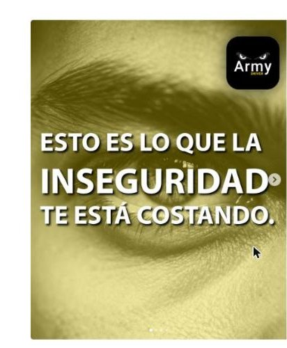
"El miedo tiene un costo ¿Te identificas con estas situaciones?"
Apela directamente al miedo; hashtags con una tilde incorrecta ("#perù").
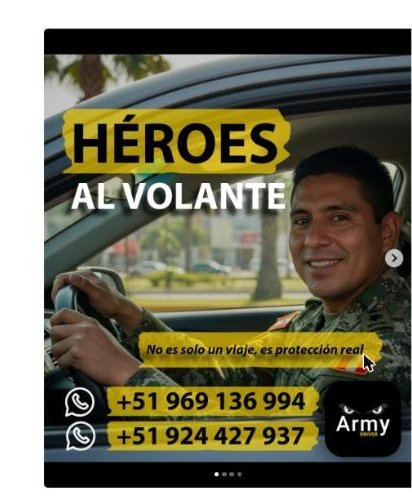
"Experimenta la diferencia de viajar con héroes: Tu seguridad, nuestra misión."
Fotografía que sí parece propia; incluye ambos números de WhatsApp de contacto.
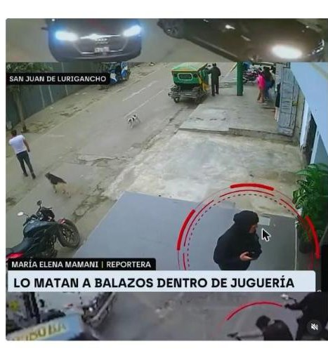
"NO ARRIESGUE TU VIDA NI LA DE LOS TUYOS. Un transporte seguro es el que te protege no el que te traslada."
Reutiliza un video periodístico real de un crimen violento como gancho publicitario — un recurso agresivo frente al resto del contenido.
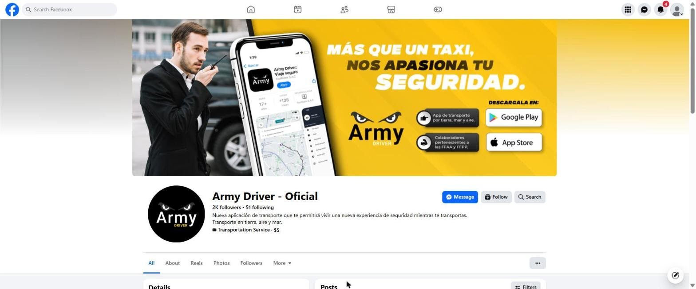
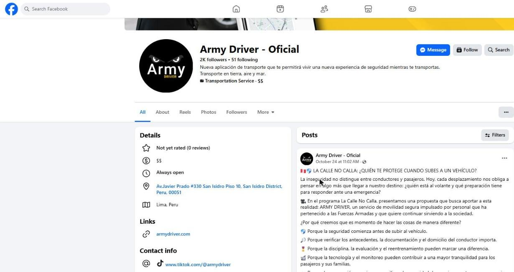
"LA CALLE NO CALLA: ¿QUIÉN TE PROTEGE CUANDO SUBES A UN VEHÍCULO?"
El copy mejor estructurado de los revisados: formato pregunta-respuesta editorial.
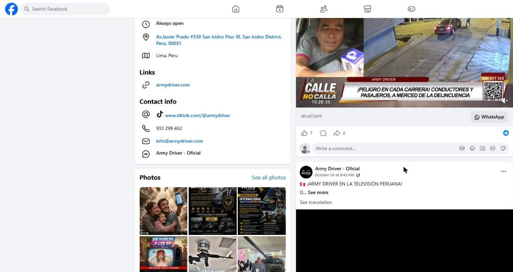
"¡ARMY DRIVER EN LA TELEVISIÓN PERUANA!"
Publicación en video de la aparición de la marca en medios televisivos.
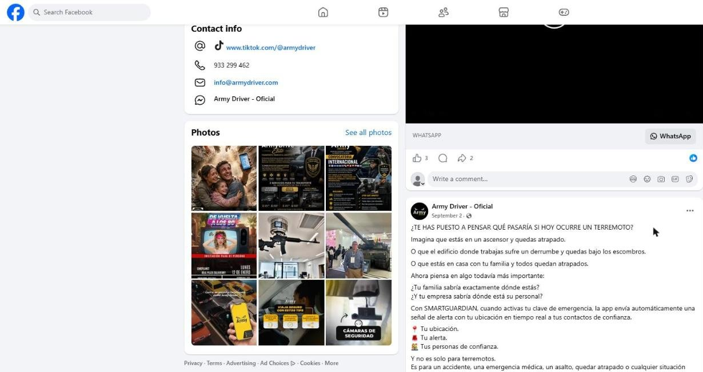
"¿TE HAS PUESTO A PENSAR QUÉ PASARÍA SI HOY OCURRE UN TERREMOTO?"
Fotografía de stock de un rescate; muestra los logos de "Idronewall" y "Smart Guardian" como marcas asociadas propias.
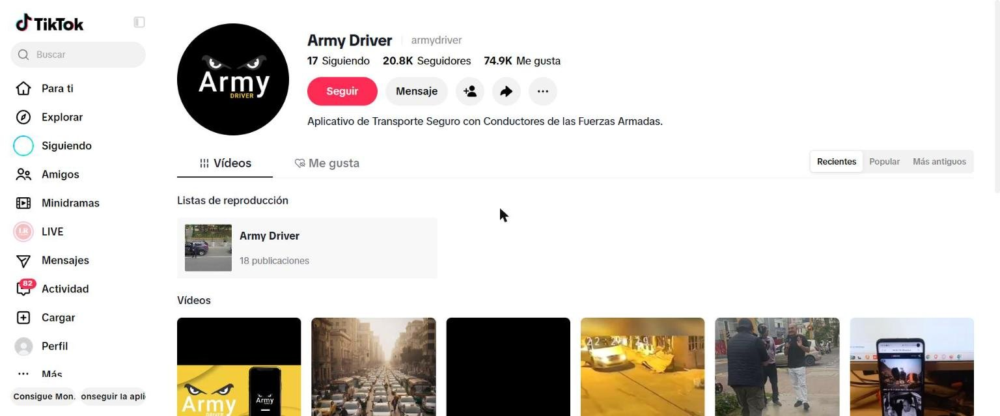
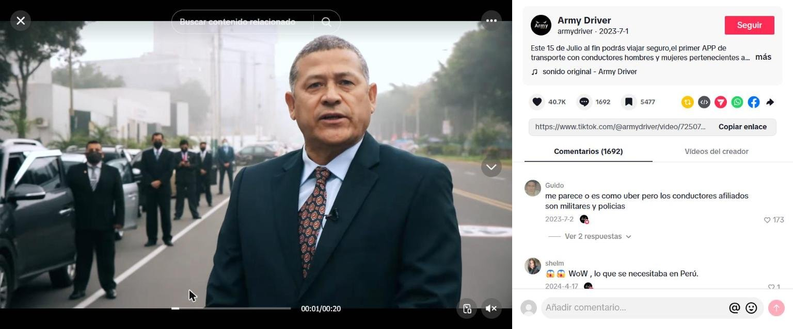
Video de lanzamiento / presentación de marca
Pieza institucional de referencia del tono audiovisual que mejor ha funcionado en esta plataforma.
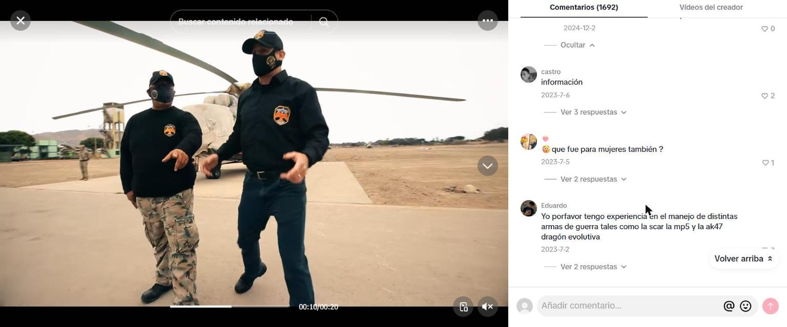
Comentarios del video de lanzamiento
Interacción real de usuarios, a diferencia del vacío casi total en Instagram y Facebook.
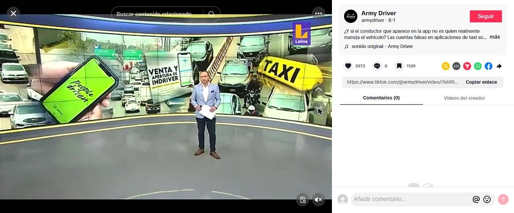
Alerta sobre cuentas falsas que suplantan la marca
Contenido defensivo de marca frente a perfiles falsos.
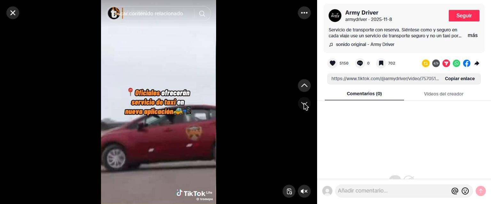
Video sobre el perfil de los conductores (ex-oficiales)
Profundiza en el atributo diferencial central de la marca, en formato cercano y no publicitario.
Notas periodísticas y entrevistas identificadas sobre Army Driver.
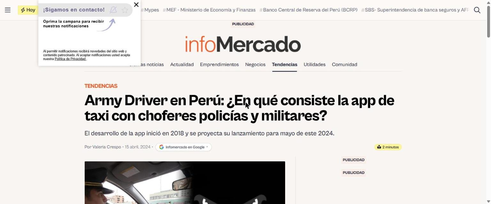
"El desarrollo de la app inició en 2018 y se proyecta su lanzamiento para mayo de este 2024."
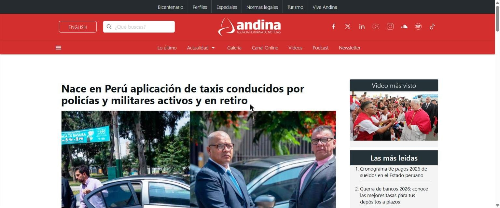
Nota con fotografía de José Ugarte Perea junto a un vehículo del servicio, de la agencia oficial de noticias del Estado peruano.
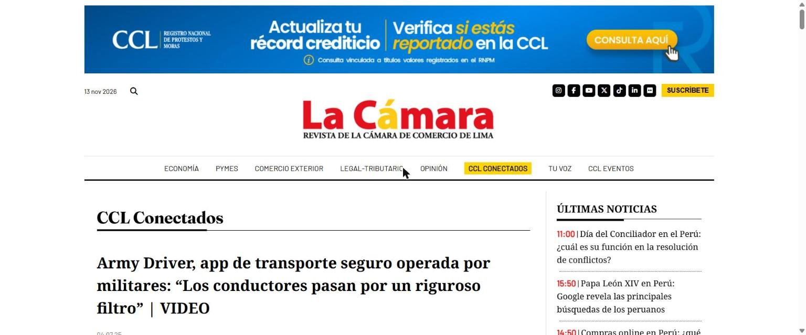
Entrevista que ubica la trayectoria del servicio en "~5 años" de operación.
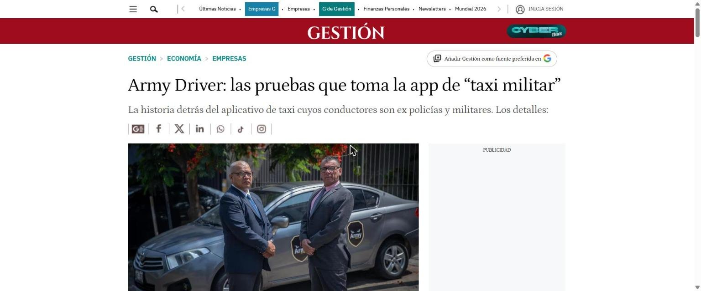
Nota de la sección de negocios; contenido completo bajo muro de pago, solo titular verificado.
Revisión página por página del sitio oficial, con lectura de contenido y de experiencia de usuario.
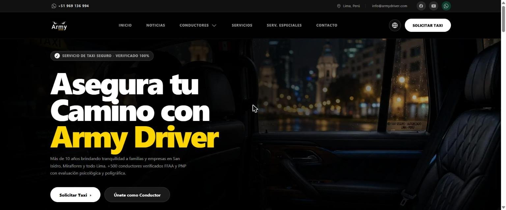
"Asegura tu Camino con Army Driver." Claim: "Más de 10 años brindando tranquilidad a familias y empresas en San Isidro, Miraflores y todo Lima. +500 conductores verificados FFAA y PNP."
Barra de estadísticas: "12,000 viajes este año · 4.9★ calificación · 100% verificados." Tres pilares: Conductores Verificados, Monitoreo GPS Real, Solución Corporativa (B2B).
Las cifras de viajes y calificación no cuentan con fuente externa verificable dentro del alcance de esta investigación.
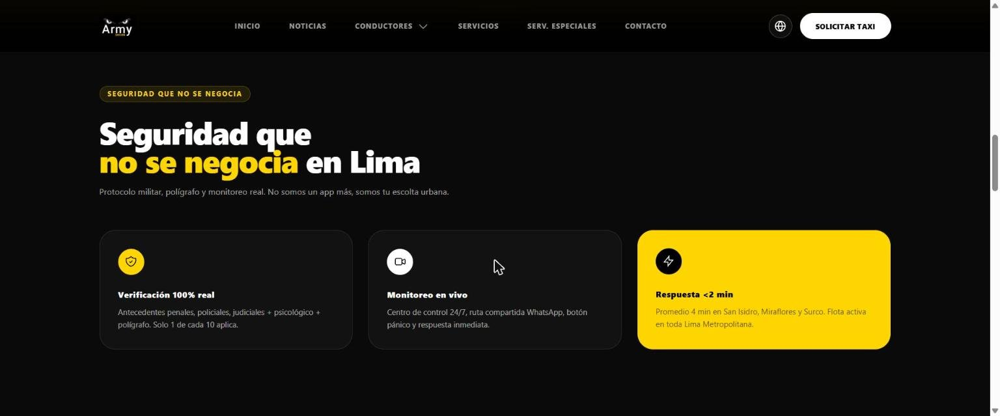
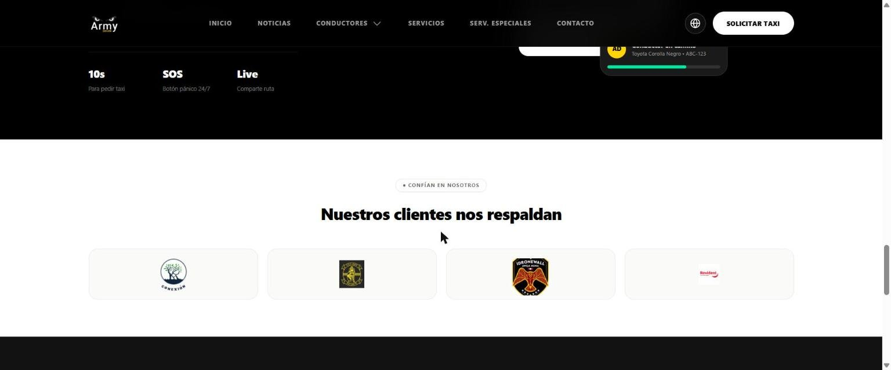
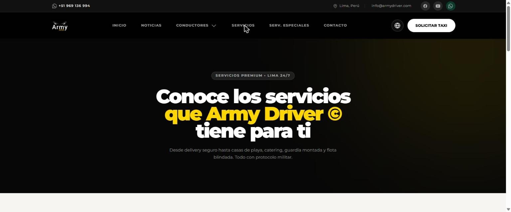
Catálogo completo: Conductor Delivery, Casas de playa (Asia, San Bartolo, Punta Hermosa), Centro de Recepción (eventos en San Isidro), Catering (chef privado), Guardia montada ("protocolo PNP + caballos de paso peruano") y Flota blindada (limusinas, SUV, yates, jets).
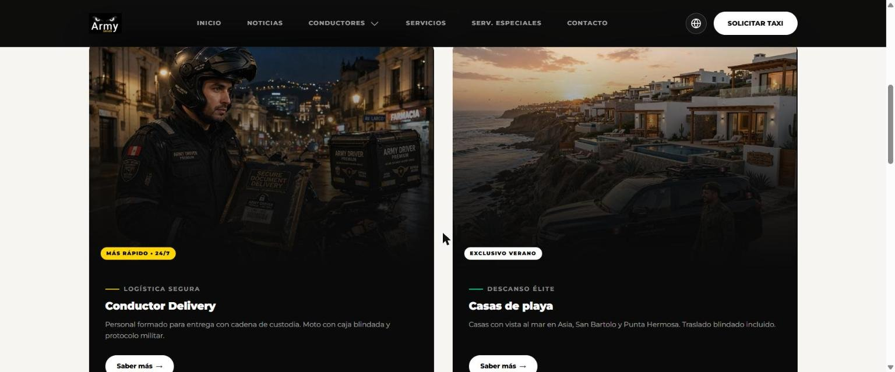
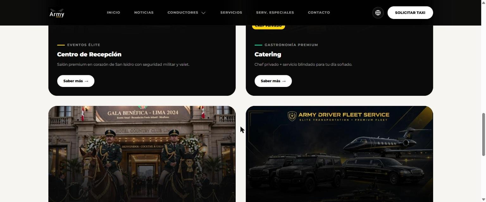
Este es el punto de mayor dispersión de marca del sitio: a partir de un posicionamiento inicial de "taxi seguro", el catálogo se extiende hacia categorías de negocio muy distintas entre sí. Cada línea puede tener lógica comercial propia, pero presentadas juntas diluyen la promesa central — y a la vez representan una oportunidad de diversificación de alto ticket si se comunican como línea diferenciada.
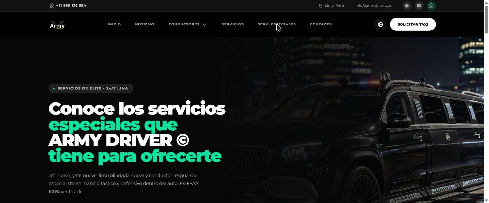
Usa un esquema de color distinto al resto del sitio (acento verde/turquesa en vez de amarillo) y un registro de escritura distinto: textos sin tildes ("tactico", "aereo", "genericos") y descripciones muy específicas, como el "Conductor Resguardo Táctico" con "volante Toyota, headset, guantes tácticos, retrovisor 360° vigilancia San Isidro noche".
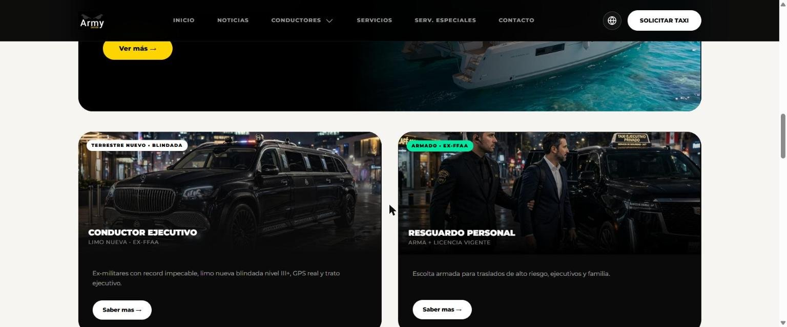
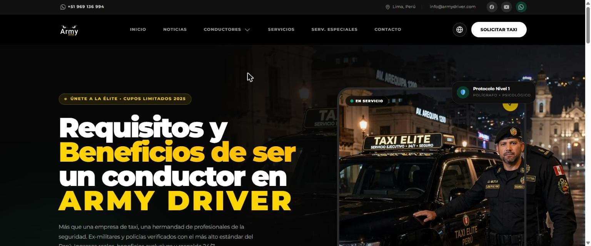
Ingreso promedio declarado de S/. 4,500 mensuales, comisión fija de S/. 2.00 por viaje, registro gratuito, "martes libre de comisión", y beneficios (50% dental con Rovident, 40% Natural English, 80% IEXE, hasta 20% en repuestos). Requisitos: edad hasta 65 años, auto propio desde 2010, antecedentes limpios, examen psicológico y poligráfico.
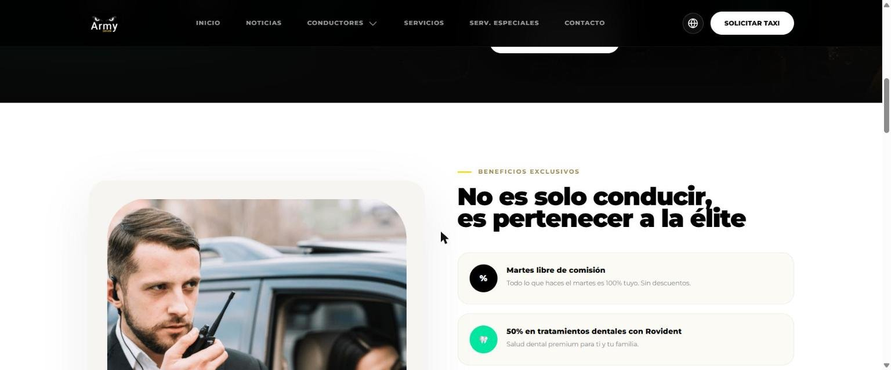
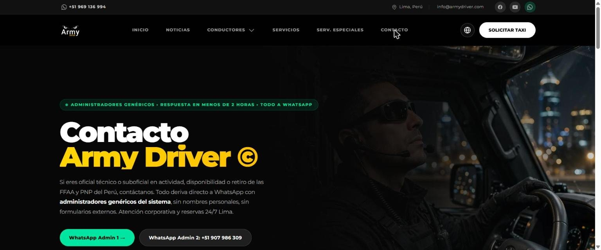
Hallazgo de experiencia de usuario: la página "Contacto" del menú principal está dirigida enteramente a candidatos a conductor, no a un pasajero que busca soporte. Un visitante que llega buscando ayuda como cliente encuentra un formulario de reclutamiento, no un canal de atención.
Arquitectura de información: algunas rutas del menú (como "Noticias") no muestran contenido propio funcional, señal de una sección construida pero sin terminar de poblar con datos.
Identidad visual: paleta dominante negro + amarillo + blanco, coherente con un mensaje de urgencia/seguridad — pero esa coherencia se rompe en "Servicios Especiales" (acento verde/turquesa).
Fotografía: conviven tres tipos de imagen — fotografía propia, banco de imágenes de lujo (jet, yate) y capturas de videovigilancia de baja resolución — sin una transición visual clara entre ellas.
Señales técnicas: rutas de archivo tipo .html y un nombre de imagen con convención de biblioteca de medios de WordPress sugieren un sitio construido con plantillas/constructor visual.
Síntesis: un sitio construido rápido y por etapas para cubrir cuanto antes todas las líneas de negocio — decisión razonable para salir al mercado rápido, que deja como consecuencia natural la dispersión visual documentada. El contenido de valor ya existe; la oportunidad es unificarlo bajo un mismo sistema de marca.
Redactadas como oportunidad de crecimiento, no como señalamiento de error.
Usar el tono y formato de TikTok —que ya genera alcance real— como modelo para Instagram y Facebook.
Llevar el nivel de cuidado editorial de piezas como "La Calle No Calla" a todas las publicaciones.
Dar una sub-marca visual a casas de playa, catering y guardia montada, con fotografía real propia.
Unificar los números de WhatsApp dispersos entre web y redes en un único canal oficial por tipo de público.
Fijar una sola versión oficial de cada dato clave, reforzando la promesa de "100% verificado" con datos igualmente verificados.
Dar visibilidad activa a la cobertura ya obtenida (Andina, Gestión, La Cámara) integrándola en el propio sitio.
Distinguir con claridad un camino para pasajeros y otro para candidatos a conductor en el menú principal.